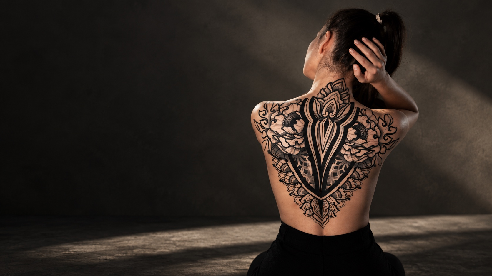
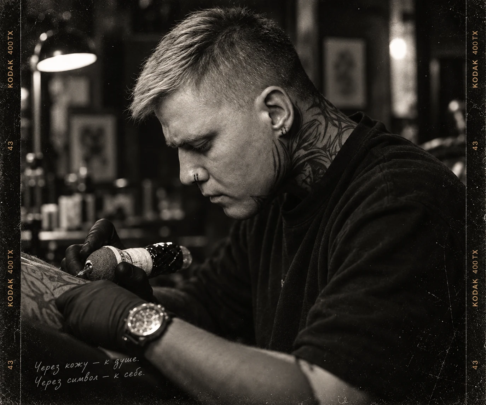
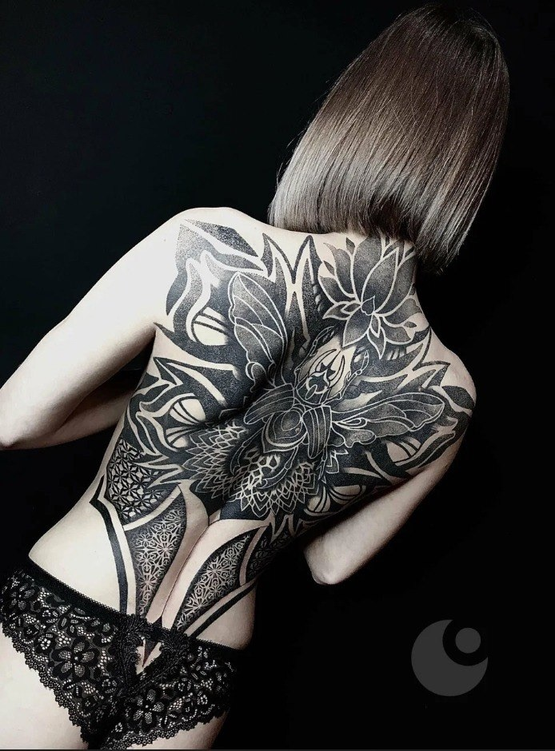
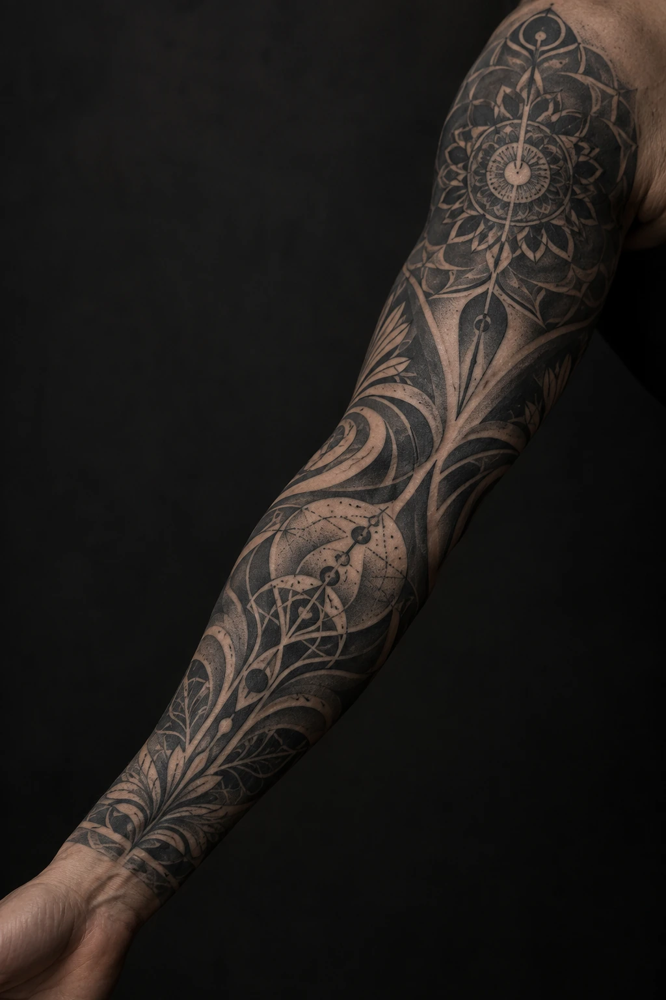
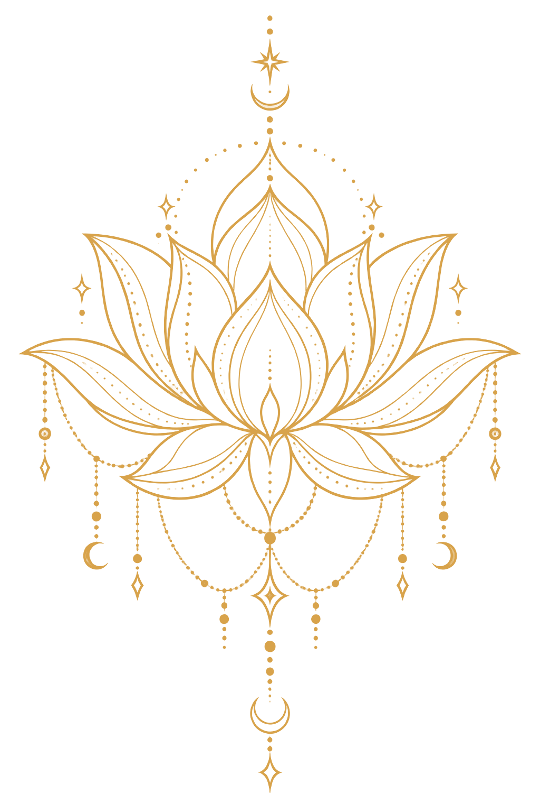
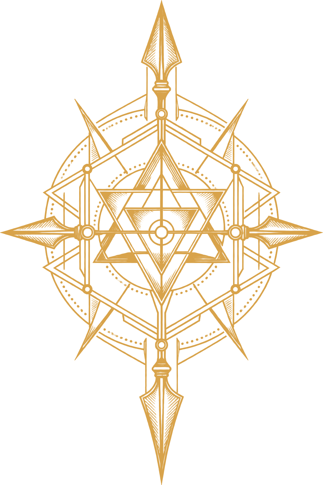
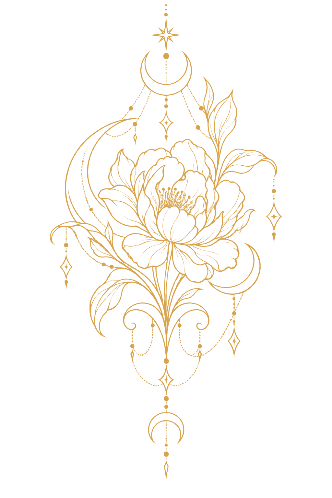
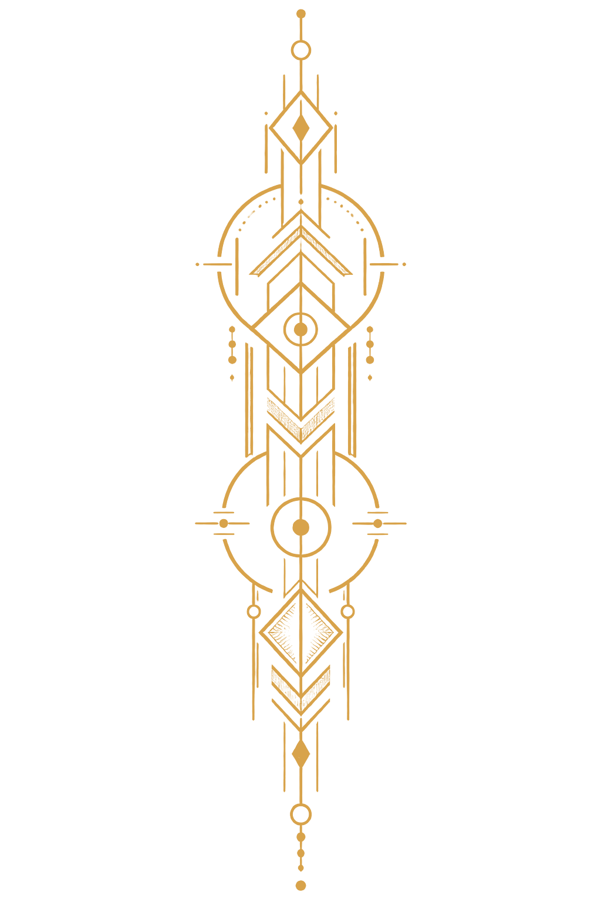
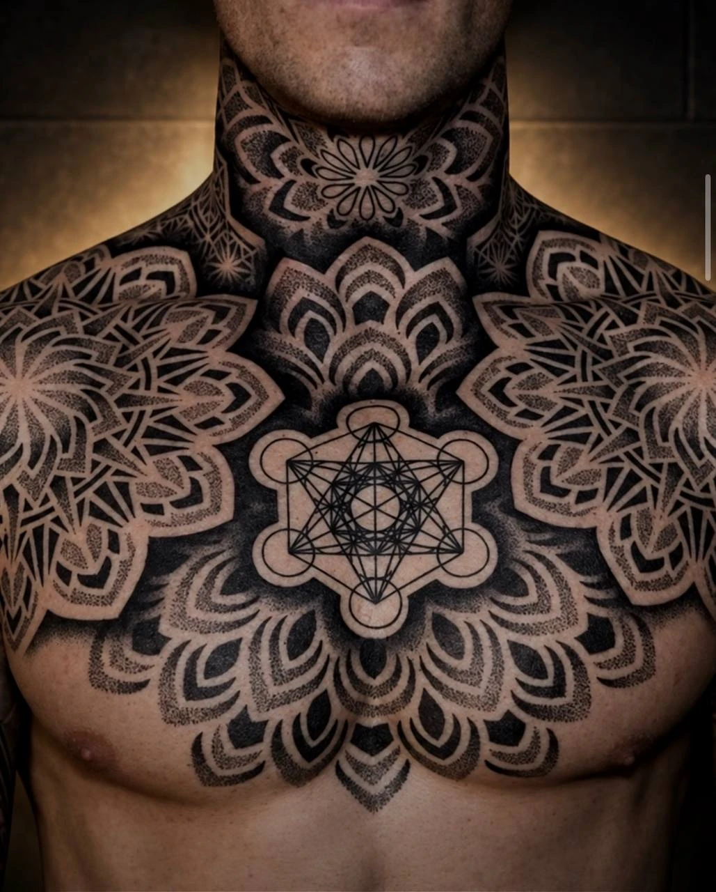

{kind=link}
{kind=link}
{kind=link}
{kind=link}
{kind=link}
{kind=link}
{kind=link}
{kind=link}
{kind=link}
Плечо
Плечо
Цена зависит от идеи
Форма огибает плечо
и продолжает анатомию.
Подходит для начала рукава.

Тату-ателье · Ростов-на-Дону
Геометрия, орнамент и образы
У каждой работы — свой смысл

«Через кожу — к душе.
Через символ — к себе.»
Для меня татуировка — это больше, чем эстетика. Это личная история, зашифрованная в линиях, форме и смысле. Я помогаю людям находить свой знак — честный, глубокий и вне времени. В каждой работе важны не только техника, но и ощущение. Именно оно остаётся с вами навсегда.
Цена зависит от идеи
Форма огибает плечо
и продолжает анатомию.
Подходит для начала рукава.

Цена зависит от идеи
Большое полотно
для смелых историй.
Здесь идея раскрывается полностью.
Цена зависит от идеи
Симметрия раскрывает грудную клетку
и собирает композицию
в единый сильный образ.

Цена зависит от идеи
Акцентная работа
или цельный рукав,
созданный под вашу анатомию.
Без спешки и неизвестности. На каждом этапе ты понимаешь, что мы делаем и зачем.

Расскажи идею, пришли референсы и обозначь место. Даже нескольких фраз достаточно, чтобы начать.

Ищу символ, ритм и композицию под твою историю. Рисунок создаётся под анатомию и масштаб.

В студии уточняем размер и расположение, переносим эскиз на кожу и спокойно начинаем работу.

После сеанса ты получаешь понятные рекомендации по уходу и остаёшься на связи с мастером.
«Влад, ты мастер — от Бога! Эскиз просто 10000/10. Я как будто родилась с этим рукавом и очень рада, что попала именно к тебе»
«Это оно! Татуировка безумно красивая. Очень комфортно, прекрасный феникс и супервайб — за такую работу отдельная благодарность от всей души»
«Индивидуальный подход впечатлил больше всего. Владислав превзошёл мои ожидания — татуировка выглядит именно так, как я мечтала»
С сообщения мастеру. Расскажи, что нравится, покажи примеры и обозначь место нанесения. Готовый эскиз для первого разговора не нужен.
Да. Отправь чёткое фото существующей татуировки при дневном свете и свои пожелания — возможность и варианты мастер оценит индивидуально.
Это зависит от размера и сложности. Для большого проекта может понадобиться несколько сеансов. Примерное время обсудим после согласования идеи.
Напиши Владиславу в Telegram или позвони по номеру +7 (905) 487-70-81. Время визита согласовывается заранее.
Накануне выспись, поешь и выбери удобную одежду, которая открывает место татуировки. Возьми документы и воду. Точные рекомендации мастер даст перед сеансом.
